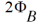

Version Update and Enhancement
Version 3.2.1 Enhancement
- Implemented clamp of forward back bias for vertically non-uniform doping (VNUD)effects model. This bug fix ensures protection against a negative input to sqrt().
-
Added a new model parameter "
VBSRFAR", allowing users to set the maximum reverse back bias value (that is, the farthest from zero). -
Extended the implementation of the VNUD model to include retrograde cases where
NSUBD>NSUBC. -
The temperature dependence of 
is now implemented in submodels, such as
Vthshift associated with short-channel effects, reverse-short-channel effects, and GID(S)L. In these submodels, now takes into account the temperature other than
now takes into account the temperature other than 300K. -
The model flag
COPB20COMPATswitches :
:
Version 3.1.1 Enhancement
Bug fix for backward compatibility in * Qbd_swg and Qbs_swg when CODIO=0.
Version 3.1.0 Enhancement
- Improvements in the depletion mode model
- Added model parameters for Vertical-Doping-Inhomogeneity model. This model accounts for vertical-doping inhomogeneity as a shift of threshold voltage from the uniform doping case.
- Added model flag for selection model in deep punchthrough model. This model gives better capability of subthreshold slope.
-
Updated oxide thickness in the overlap region:
+ TOXOV = 3.0e-9
+ OVINVDLT = 75.0 -
Improvement in lateral diffusion of the S/D under the gate for better capacitance fitting:
+ XLDC = 0
+ XWDC = 0 -
Added selector to include improved diode model:
+ CODIO = 0 (default)
= 1 (improved) -
Bug fixed on the induced gate noise for
Flip_NandFlip_Ptests.
Version 3.0.0 Enhancement
Version 2.91 Enhancement
- RD/RS calculations in reverse mode.
-
Negative Cdd/Css issue in
CODEP=2. This fix causes non-backward compatibility, therefore, a flag COFIXCSS has been introduced to fix the issue.
The flag is only for HiSIM2 version 2.9.1. For HiSIM2 version 3.0.0 and future releases, the fix for negative capacitance will be implemented.
Version 2.90 Enhancement
-
Improvement of the depletion mode model with
CODEP=2, whereCODEP=1refers to the version 2.8.0 model. - Addition of a model parameter for the junction leakage current at the gate-edge sidewall.
- Improvement in the temperature dependence of Isub.
- Improvement in the ranges in parameter declaration.
-
Addition of range checking for model parameter values and binning after calculation of
LgateandWgate. - Cleaning of source code.
- Bugs fixes:
Version 2.80 Enhancement
-
New depletion mode MOSFET model introduced. It is activated with the flag CODEP=1.
- Improved Vds,eff calculation with new model flag CODDLT=1.
- Range changed for parameters RSH, QME2, QME3, and VFBC.
- Default values of parameters QME2, DDLTICT and DDLTSLP VFBC , NSUBC , LP , NSUBP and MUESR1 changed when CODEP=1
- Bugs fixes:
Version 2.70 Enhancement
- Unit conversion from CGS to MKS
-
Change in model descriptions
-
Suppression of error messages from the range check when new the model flag
COERRREPis set to 0 -
Improvement of GIDL current model with new model parameters
GIDL6andGIDL7 -
Improvement of STI effect model with new model parameters
NSUBCSTI1,NSUBCSTI2, andNSUBCSTI3 -
Introduction of gate length dependence for
VFBCwith new model parametersVFBCLandVFBCLP -
Improvement of smoothness of the NSUBPFAC model with the new model parameter
NSUBPDLT -
Invalidation of the
NSUBPFACmodel whenNSUBPFAC = 1 -
Range check of model parameters
NSUBPFACandNSUBPDLT
-
Suppression of error messages from the range check when new the model flag
- Bug fixes:
Version 2.61 Enhancement
-
Missing initialization of
NSUBC,NSUBP, andMUEPH1in the Initialize for repeating simulation - Unit converting in the Initialize
-
Derivative calculations in the
Qovermodel code -
Floating point exception in the
QMEmodel code - Floating point exception in the smoothing functions
Version 2.60 Enhancement
- Introduction of the Well Proximity Effect model with new parameters:
- Improvement of the overlap capacitance model
- Activation of Induced Gate Noise model
- Change the default value of the instance parameters NRD and NRS.
Return to top